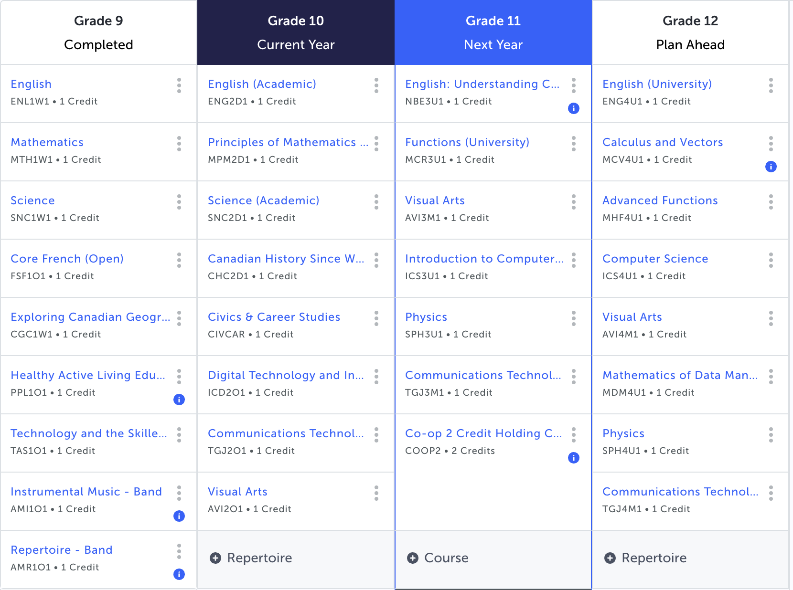

Since I am pursuing a career that involves art and design, I chose to take art classes for both grades 11 and 12 to enhance my creativity and artistic skills, which would be crucial for this career field. Game designers usually work digitally, and communication technology courses involve learning how to use computer programs to design and produce different products, which would be beneficial and a handy skill to possess. Game designers might need to code and program sometimes, and programming skills are practical for this position; therefore, I chose computer science class for grades 11 and 12. Finally, English and Math classes are required either for graduation or for the university program I want to pursue.